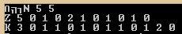
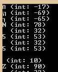
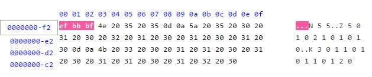
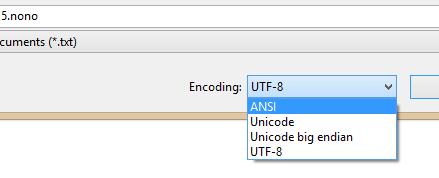
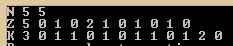

2014-12-30
I bumped into a strange problem with reading a text file recently. The file described the layout of a Nonogram for a program my father was working on:
And to read the first line, he used something like this:
However, this didn’t work, the ints didn’t get read successfully. I then tried
to not ignore whitespace, resulting in this:

Behold, three unwanted characters! What are they? Let’s cast them to int to find out more:
char ch;
ifstream ifs("Goobix 5.nono");
while (ifs.get(ch))
cout << ch << " (int: " << int(ch) << ")\n";and we get

Negative, eh? Strange. Other people have seen similar things, so apparently these aren’t normal ASCII characters. To find out more, I’ve looked at the text file with a hex editor:

The file starts with 0xef 0xbb 0xbf. That’s googleable! and leads to byte order marks (BOM). The BOM indicates endianness and encoding of the text file; in the case of 0xef 0xbb 0xbf, it is a UTF-8 encoded file. To get rid of the BOM, we can just save the file with ANSI encoding:

Now, the file behaves as expected when being read:

Encodings in C++ (and elsewhere!) can be daunting. Good readings I have found include these:
The Absolute Minimum Every Software Developer Absolutely, Positively Must Know About Unicode and Character Sets (No Excuses!) by Joel Spolsky
And, one day, should I have lots of spare time: Standard C++ IOStreams and Locales by Angelika Langer and Klaus Kreft
Edit (February 2, 2015): Since I’ve written this, I’ve read Dive Into Python 3 by Mark Pilgrim, and the chapter about strings has made encodings so much clearer to me, so it is most recommended reading.